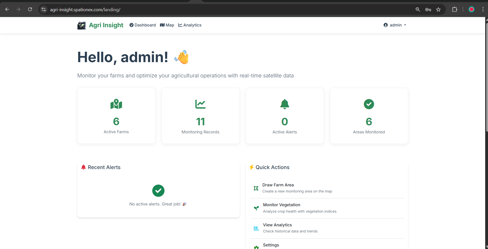

Featured Projects
Earth observation systems, agro-climatic tools, and geospatial intelligence platforms — built for real-world food security decisions.

LiveAgriInsight — AI-Driven Crop Health Monitoring Platform
Production-grade satellite-based crop health platform using Google Earth Engine for real-time NDVI, EVI, SAVI, NDMI, and soil moisture monitoring. Automated stress detection, yield prediction, and agro-climatic alerts via Django/PostGIS. Designed for regional-scale deployment with near real-time satellite ingestion.
Early Warning System — Crop Yield & Soil Moisture Monitoring
Flask-based EWS integrating ML-based crop yield prediction, real-time soil moisture monitoring, and weather anomaly detection. Automated threshold-based alerts with Twilio/Firebase notifications. Uses GEE remote sensing data + Scikit-learn/TensorFlow for predictive analytics and risk mapping.
Crop Inventory & Maize Yield Prediction System
Remote sensing + ML system for maize yield prediction using vegetation indices and agro-climatic data. Integrates GEE satellite imagery with statistical/ML models (Scikit-learn, TensorFlow) and WebGIS dashboard for spatial visualization of yield outlooks, soil health, and climatic stress indicators.
Land Use / Land Cover Classification (Google Earth Engine)
Large-scale LULC classification using Landsat 8 imagery in the Google Earth Engine cloud platform. Applied supervised classification algorithms for agricultural zone delineation, cropland mapping, and seasonal land-cover change detection — foundational for crop condition baseline analysis.
Above-Ground Biomass Estimation Using Vegetation Indices
Spectral-index-based estimation of above-ground biomass across agro-ecological zones. Applied NDVI, EVI, and related vegetation indices to satellite imagery for biomass mapping — supporting crop productivity monitoring, carbon stock assessment, and environmental change detection.
GEDI Satellite LiDAR Data Visualization
Processing and 3D visualization of NASA GEDI (Global Ecosystem Dynamics Investigation) LiDAR data using Kepler.gl. Extracts canopy height and vegetation structure metrics from space-borne LiDAR — critical for accurate crop structure assessment and agro-ecological benchmarking.
Geospatial Python Analysis Toolkit
Collection of Python geospatial analysis workflows using GeoPandas, Rasterio, Shapely, and Fiona. Covers vector/raster operations, coordinate transformations, spatial statistics, and automated geoprocessing pipelines — core building blocks for agro-climatic data workflows.
GEEMAP Cloud-Based EO Processing
Interactive Earth Engine analysis using the GEEMAP Python library. Demonstrates cloud-based processing of large-scale satellite datasets for vegetation monitoring, time-series NDVI analysis, and regional agricultural assessments without local compute constraints.

 AI • Live
AI • Live
Smart Knowledge Assistant (RAG) for Complex Docs
Production AI knowledge assistant using Retrieval-Augmented Generation — structured chunking, ChromaDB vector search, and controlled prompt strategies for grounded, hallucination-free responses. Applicable to early warning bulletin dissemination and policy knowledge systems.